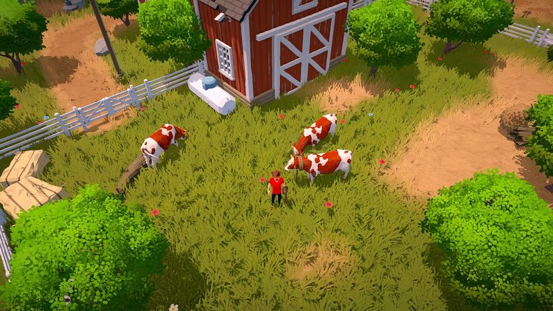

The Ranchers Animal Database

Pre-launch note: This page is ready for confirmed launch data, but the table below intentionally does not publish unverified animal prices, products, or production cycles. We'll update it from the Early Access build and official sources after the July 30 launch.
Search by animal or product, filter by category, and click any column header to sort once confirmed entries are live. Profit/day here means (product price × products per cycle − upkeep per cycle) ÷ cycle days, per animal. New to ranch economics? Read the money-making guide first.
– entries
| Animal | Product | Cycle (days) | Products/cycle | Sell price | Profit/day | Status |
|---|---|---|---|---|---|---|
| Confirmed animal data | TBD | TBD | TBD | TBD | TBD | pending launch confirmation |
Reminder: animals only profit when upkeep is covered. Buy livestock once your crop income comfortably covers feed — the exact break-even math is built into the profit calculator.
How to use this table
- Poultry is often the classic entry point in ranch sims: cheaper animals, frequent products, fast feedback.
- Dairy often trades higher startup cost for steady, higher-value goods, but The Ranchers' exact margins need confirmation.
- Livestock with multi-day cycles can become strong mid-game, once you can afford the wait and upkeep.
Launch verification queue
Once Early Access is live, the first animal pass will focus on the numbers that decide whether a barn purchase is actually affordable:
- Starter animals: purchase cost, housing requirement, daily upkeep, product name, and product sell price.
- Production timing: whether products appear daily, on a fixed cycle, or only after care/quality conditions are met.
- Care costs: feed, medicine, building upkeep, and any tool or machine costs needed to collect products.
- Processing path: whether animal products can be processed and how machine time changes profit/day.
Planning a co-op barn? The co-op guide shows how to assign a dedicated barn lead. Building your first ranch? Start with the beginner's guide.